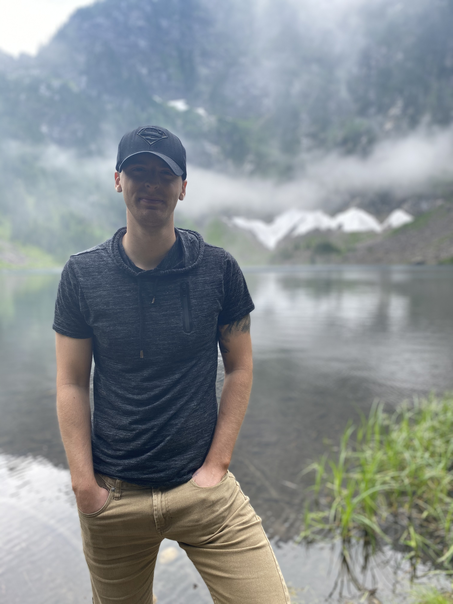
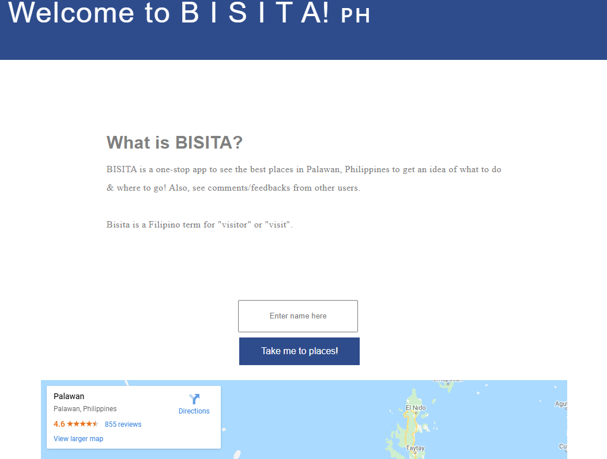
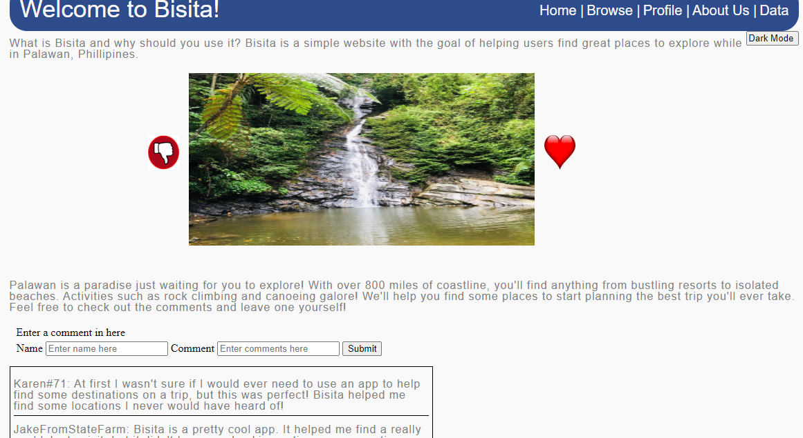
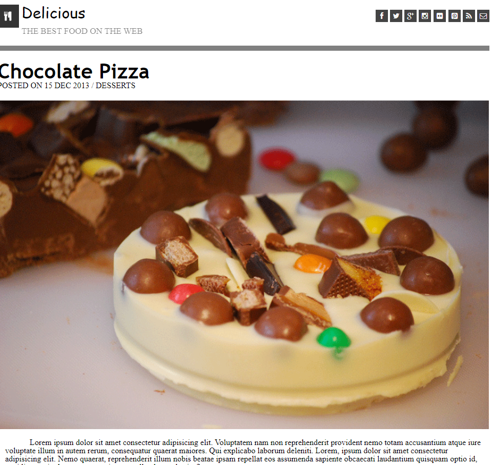
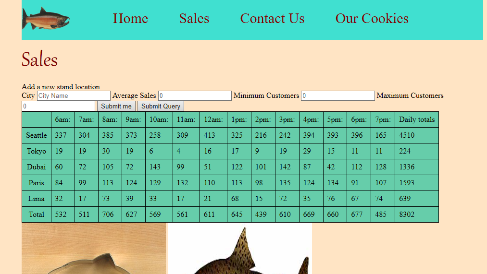

Hi, my name is
Matthew Petersen.
I build things for the web.

I’m a Software Developer with a background in military police. I decided to do a shift in careers because I wanted a more challenging but rewarding career and career in which I could make my own path. I chose programming because I knew nothing about it other than it was a skill that could be learned and Seattle has a growing tech industry that I knew I should try to take advantage of. The more I learn and use my skills, the more excited I get about my career and my future to come in tech. The thing that excites me the most about tech is the opportunity it brings and the incredible people that follow it.I’m looking to join a team where we can collaborate, grow and become the best versions of ourselves.
About me
At 18 I didn't know what I wanted to do with my life, so I thought the military would be a great place to figure myself out. I enlisted in the U.S Navy in August of 2014. I traveled around the world, meeting some amazing people while serving for our great nation. After my four year contract was nearing its end, I knew I wanted more out of life than the "enlisted life". So I decided to separate from the Navy and start college at Shoreline Community. There I hit a HUGE wall. College was not a good fit for me, it was slow, expensive and boring. I decided to get a full-time job and see what life would throw at me. While I was working at Orkin Pest Control I was told to check out Code Fellows. After doing some research I finally think I found something I would be passionate about. Coding may not be the end goal for me, however, I took a big step in the right direction. The program is pushing me to be the best version of who I am and propelling my career as a Software Developer.

Previous Works
My best work completed so far has been my final from seattle-201d65, my team did an amazing job. To look just click here! Also some great projects I worked on are Chocolate-Cake and SalmonCookies.



